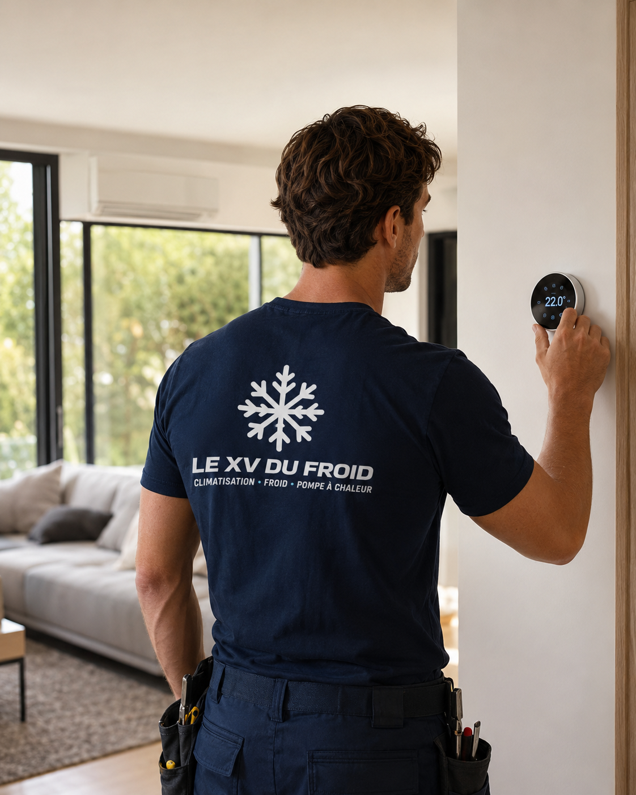
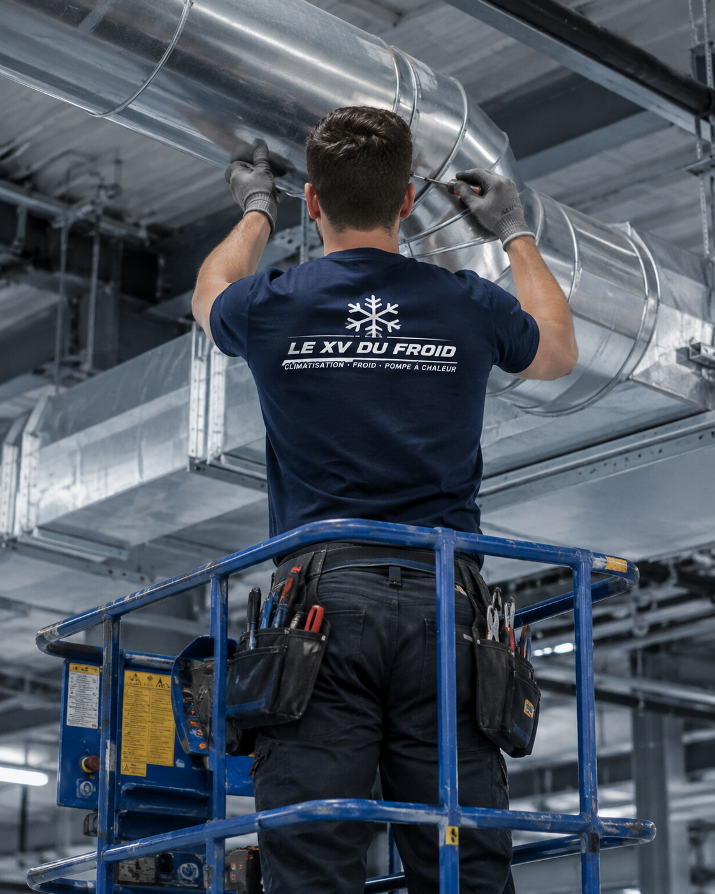

Installation climatisation Rambouillet · Yvelines (78)
Installation de climatisation à Rambouillet.
Climatisation réversible à Rambouillet pour maison individuelle, appartement de centre-ville, commerce et bureau. Le froid l’été et l’appoint de chaleur aux intersaisons sont étudiés selon l’isolation réelle.
- Étude sur place
- Devis détaillé
- Essais à la mise en service

Rambouillet · 78120
Rambouillet : forêt, maisons et hivers plus frais qu’en petite couronne.
Rambouillet est une sous-préfecture entourée de forêt, avec un centre autour du château, des quartiers résidentiels de maisons et quelques immeubles. Le climat y est souvent plus frais que dans le cœur de la région parisienne, ce qui donne tout son intérêt à une pompe à chaleur air-air réversible.
- Surface, volume, orientation et isolation
- Emplacement possible du groupe extérieur
- Voisinage, copropriété, accès et condensats
- Essais, réglages et conseils d’utilisation
Installation climatisation Rambouillet
Une ville de maisons, donc des besoins par pièce.
Le parc de logements est largement composé de maisons individuelles : cottages, pavillons, longères. Les besoins se concentrent sur quelques pièces — chambres à l’étage, bureau, véranda. Équiper chaque pièce n’est pas nécessaire : nous ciblons celles qui chauffent trop en été ou refroidissent trop en hiver.
L’isolation est le premier juge de paix. Une maison bien isolée demande peu de puissance ; une maison ancienne aux combles perméables en demande davantage et consomme plus. Nous le disons franchement, car une clim ne compense pas une toiture mal isolée.
Autour de Rambouillet, la végétation et l’humidité de la forêt imposent un entretien plus attentif : feuilles, pollens et poussières encrassent plus vite les groupes extérieurs. Nous le prévoyons dès l’installation en laissant un accès confortable au groupe.

La maison avec étage : traiter là où ça compte.
Une chambre sous toit en juillet ou un séjour vitré au sud posent un problème bien identifiable. Un mono-split placé au bon endroit suffit souvent, avec un groupe extérieur accessible par le jardin ou l’arrière de la maison.
- Diagnostic des pièces surchauffées en été
- Groupe extérieur à l’abri des chutes de feuilles
- Liaisons passées par garage, combles ou gaine existante
Contraintes du lieu
Les points à contrôler à Rambouillet.
Pour une maison : orientation des pièces, état de l’isolation, emplacement du groupe, distance au voisin. Pour un appartement du centre : accord de la copropriété, façade, éventuelle proximité du château.
Autour du château et du parc, un périmètre de protection peut s’appliquer ; nous vérifions avec vous les règles à connaître avant de percer une façade visible. Dans les quartiers de maisons, la contrainte principale reste le voisinage proche.
Choix du système
Quel système pour une maison de Rambouillet ?
Pour deux à trois chambres à l’étage, un multi-split avec un seul groupe discret est souvent un bon compromis. Pour une seule pièce à traiter, un mono-split reste plus simple et plus économique.
Les pièces à très haute hauteur — mezzanines, séjours en double volume — se traitent avec une console ou une unité à diffusion puissante. L’air chaud monte, nous plaçons donc l’unité en tenant compte de cette stratification.
- Mono-split : chambre à l’étage, bureau ou véranda.
- Multi-split : plusieurs chambres à traiter avec un seul groupe.
- Console : séjour en double volume ou pièce basse.
- Réversible : chauffage d’appoint pour intersaisons fraîches.
Recherches précises
Demandes fréquentes à Rambouillet.
Les habitants cherchent un confort d’été sans renoncer à la chaleur d’appoint l’hiver. Les professionnels du centre-ville cherchent un confort stable pour accueillir clients et patients.

Commerces, cabinets et bureaux autour du château.
Les boutiques et cabinets du centre accueillent du public toute l’année, y compris les week-ends d’affluence touristique. Nous prévoyons un matériel discret, une diffusion confortable et un accès aisé pour la maintenance.
- Matériel discret depuis la rue
- Puissance adaptée à la fréquentation
- Maintenance simple à réaliser
Méthode
Notre méthode pour une installation à Rambouillet.
À Rambouillet, la visite sert à comprendre comment on vit dans la maison : où l’on dort, où l’on travaille, quelle pièce surchauffe. C’est cette lecture qui permet de proposer peu d’appareils, mais bien placés.
En fin de pose, nous testons le froid et le chaud, contrôlons l’écoulement et remettons une fiche d’entretien pour le nettoyage des filtres, utile en environnement forestier.
Prix et devis
Un prix qui dépend de la maison, pas d’un forfait standard.
Le tarif varie avec le nombre de pièces, la puissance, la longueur des liaisons, l’accès au toit ou au garage, les travaux de finition et la nature du support de fixation extérieur.
Nous présentons un devis détaillé, où chaque opération est lisible. Vous comparez ainsi à armes égales si vous demandez plusieurs avis.
FAQ
Questions fréquentes : climatisation à Rambouillet.
La clim réversible est-elle utile à Rambouillet ?
Oui, surtout aux intersaisons, où elle sert de chauffage d’appoint dans une pièce précise. Elle ne remplace pas un système principal dans une maison mal isolée.
Quelle pièce équiper en priorité dans une maison ?
Souvent la chambre à l’étage, qui reste chaude la nuit en été. Nous repérons avec vous les pièces concernées avant de proposer un appareil.
Le groupe extérieur craint-il la forêt et les feuilles ?
Il demande surtout un nettoyage régulier de ses grilles. Nous l’installons à un endroit accessible pour faciliter cet entretien.
Pouvez-vous intervenir autour du château ?
Oui, en tenant compte d’éventuelles règles de protection du patrimoine. Nous vérifions avec vous ce qui s’applique à l’adresse.
Combien d’unités pour une maison de quatre chambres ?
Il n’est pas toujours nécessaire d’équiper toutes les chambres. Deux ou trois unités ciblées suffisent souvent à améliorer le confort.
Faites-vous l’entretien sur Rambouillet et alentours ?
Oui. Nous intervenons à Rambouillet, Gazeran, Le Perray-en-Yvelines et dans les communes voisines.
Secteurs couverts
Installation climatisation dans tout Rambouillet.
Nous intervenons à Rambouillet, dans le centre-ville, à Groussay, aux abords de la forêt et dans les communes voisines comme Gazeran ou Le Perray-en-Yvelines. L’accès et la préparation du chantier s’adaptent à chaque adresse.
Demander une étude à RambouilletMaillage utile
Pages proches et guides utiles.
À lire aussi : installation climatisation Mantes-la-Jolie, installation climatisation Montigny-le-Bretonneux, toutes nos zones d’intervention, choisir la puissance d’une climatisation, entretien d’une climatisation.
Transparence
Un devis clair avant toute intervention.
Vous savez ce qui est prévu, pourquoi c’est nécessaire et à quel tarif avant que le technicien commence. Puis contrôles et essais avant son départ.